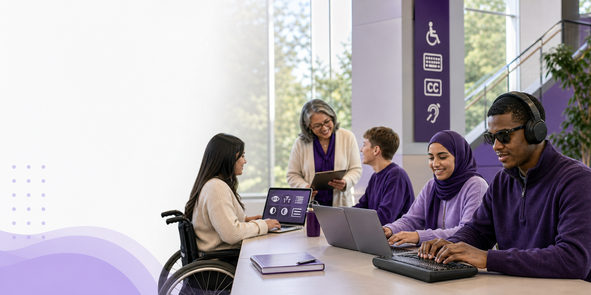

Rosa Vidal
“La informació clara em fa guanyar autonomia”

06 · Persona gran
Perfil
- Edat: 72 anys
- Ocupació: jubilada
- Educació: programa sènior de la UdL
- Condició: usuària gran amb més necessitat de suport en entorns digitals
- Ús: utilitza tauleta i telèfon mòbil de forma habitual
- Necessita: text llegible, navegació simple, botons clars i ajudes per entendre processos digitals
Com utilitza la tecnologia
- Consulta informació i fa tràmits amb la tauleta.
- Utilitza el telèfon mòbil per comunicar-se i gestionar activitats del dia a dia.
- Prefereix pantalles clares i amb poques distraccions.
- Agraeix els missatges directes i les instruccions pas a pas.
Barreres principals
- Text petit o poc contrastat.
- Procés amb massa passos o massa informació a la vegada.
- Botons i enllaços poc clars.
- Missatges tècnics o confusos.
- Canvis de pantalla inesperats.
Necessitats
- Text gran i contrastat.
- Navegació senzilla i coherent.
- Ajuda contextual i clara.
- Passos curts i previsibles.
- Botons amb bona mida i espai entre elements.
Què pots fer tu
- Escriu amb llenguatge clar i frases curtes.
- Organitza el contingut en passos simples.
- Fes que els errors expliquin la causa i la solució.
- Evita sobrecarregar la pantalla amb massa opcions.
- Mantén la navegació i els patrons d'interacció consistents.
- Inclou suport visual quan sigui útil.
Més informació
Eines assistencials
No utilitza eines assistencials específiques.
Simuladors
Recursos per experimentar com poden afectar l'edat i la lectura en entorns digitals.
| Descripció | Recurs |
|---|---|
| Simulador relacionat amb l'experiència de navegació en edats avançades. | Tengo baja visión |
Checklist d'avaluació
Verifica aquesta informació d'un lloc web per saber si el contingut és accessible per a persones grans.
- El text és prou gran i llegible?
- Els botons i enllaços tenen una mida suficient?
- La navegació és simple i coherent?
- Els missatges són clars i sense tecnicismes?
- Hi ha suport visual per entendre millor la informació?
- Els passos són curts i previsibles?
- La pàgina evita distraccions i massa opcions alhora?